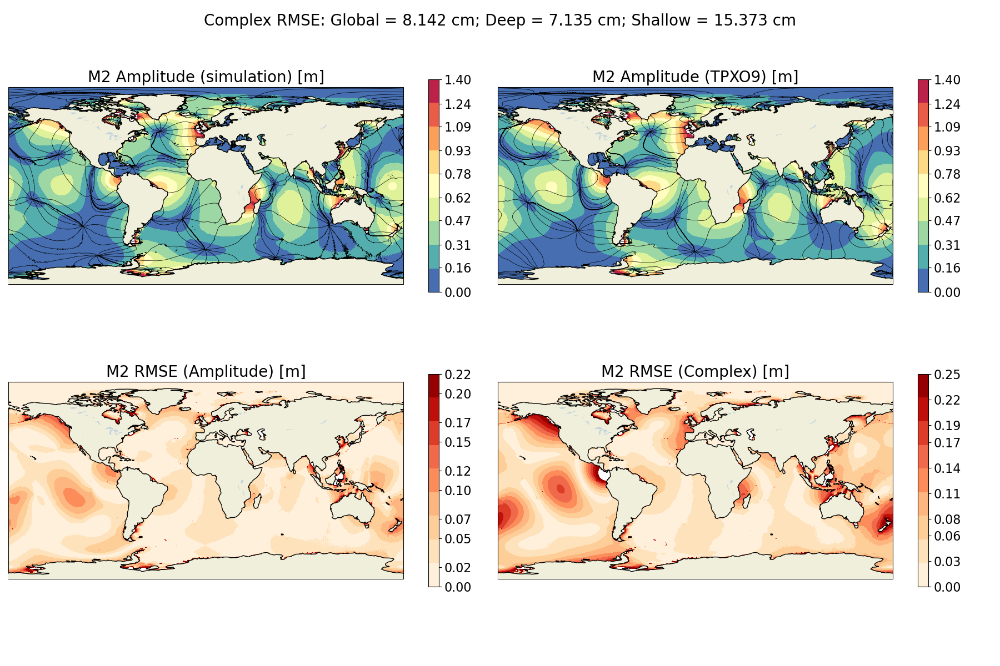

Tidal constituents extracted from harmonicAnalysis.nc
(MPAS-Ocean harmonic analysis member) are compared against TPXO9 atlas
amplitudes and phases at every ocean cell. Extraction uses OTPS2
extract_HC (128 parallel processes). Error metrics follow
the complex RMSE definition:
E𝑐 = √[ ½(Aₘ² + Aₜ²) − Aₘ Aₜ cos(φₘ − φₜ) ]
where subscripts m and t denote model and TPXO9 respectively. Global RMSE is area-weighted over all ocean cells with depth > 20 m. Deep ocean excludes cells shallower than 1000 m; shallow ocean restricts to 20–1000 m depth, |lat| < 66°.
| Constituent | BP Anomaly — Complex RMSE (cm) | Atm Tide Only — Complex RMSE (cm) | ||||
|---|---|---|---|---|---|---|
| Global | Deep | Shallow | Global | Deep | Shallow | |
| M2 | 8.143 | 7.135 | 15.373 | 4.979 | 2.695 | 14.176 |
| S2 | 3.582 | 3.065 | 6.825 | 2.117 | 1.336 | 4.553 |
| N2 | 1.654 | 1.426 | 3.292 | 0.920 | 0.542 | 2.475 |
| K1 | 2.496 | 1.261 | 6.626 | 1.861 | 1.134 | 3.973 |
| O1 | 1.858 | 1.112 | 4.530 | 1.336 | 0.686 | 2.946 |
All values in cm. BP Anomaly values computed from harmonicAnalysis.nc;
Atm Tide Only values from compass run stdout.

Each panel shows (top-left) MPAS-Ocean amplitude, (top-right) TPXO9 amplitude, (bottom-left) amplitude RMSE, (bottom-right) complex RMSE. Phase co-tidal lines overlaid on amplitude panels. Color scale in metres.